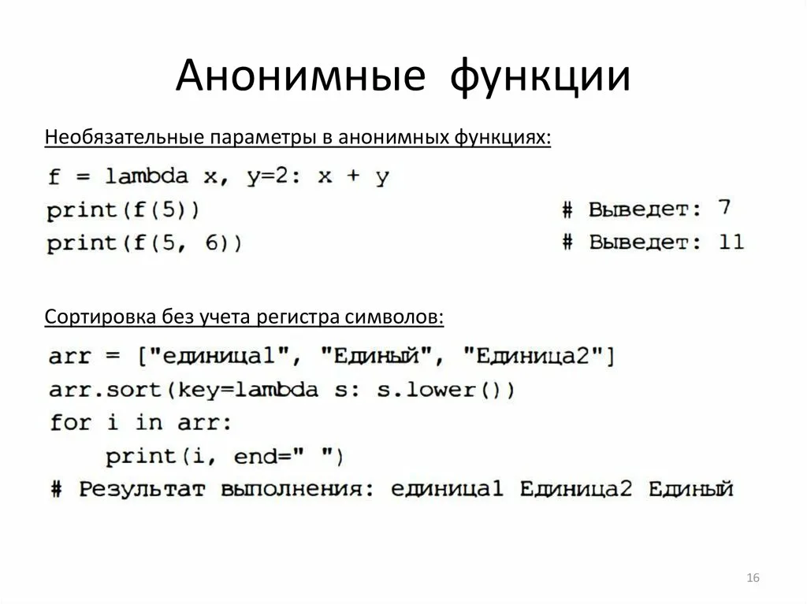
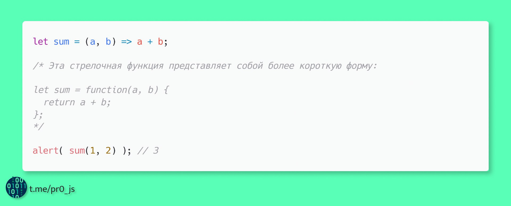

1. Анонимная функция:

Анонимная функция — это функция, у которой нет имени. Обычно она используется как обратный
вызов или передается в другие функции.
2. Стрелочная функция:

Стрелочная функция — это компактный способ записи функции, введённый в ES6. Она использует
синтаксис =>. Стрелочные функции не имеют собственного контекста this, они заимствуют его
из окружающего контекста.